World and zones
An island of about 100 km² in six biomes, laid out as 15 zones.
Designed The main map is an island of about 98.3 km² with sea all around: 15 zones of 2.56 × 2.56 km, within a box of 15.4 × 10.2 km. It streams in as you travel. Crossing it should take about 45 minutes on foot and 15 to 20 minutes by hoverbike (targets for tuning speeds).
The island in the editor
Open question A first rough build of the main map in the
Unreal Editor (a blockout, 2026-10-17), to see the island's size and shape before it is built for real: each zone's
ground shaped and coloured for its proposed biome, the sea all around, no plants or buildings yet. The layout is
a proposal waiting for the owner's yes. In the editor: /Game/Tharrn/Scratch/L_Island_Blockout.

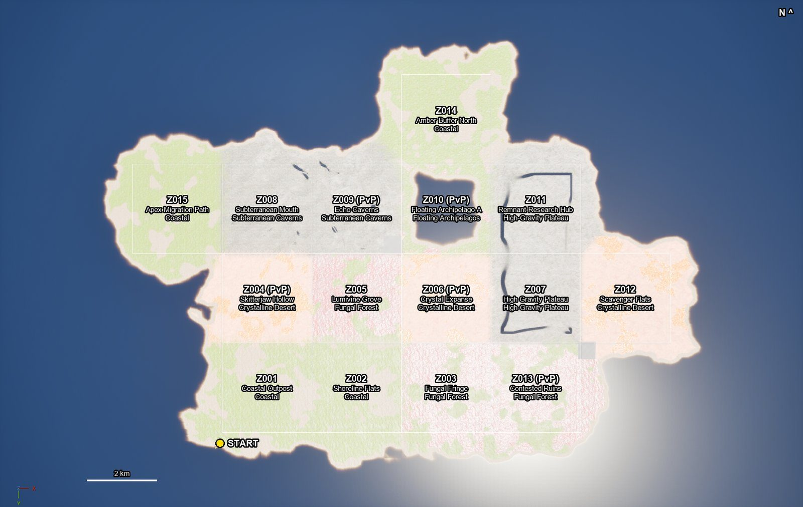

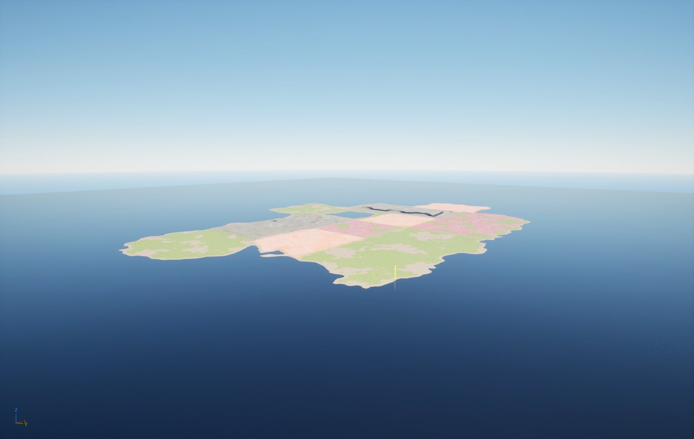

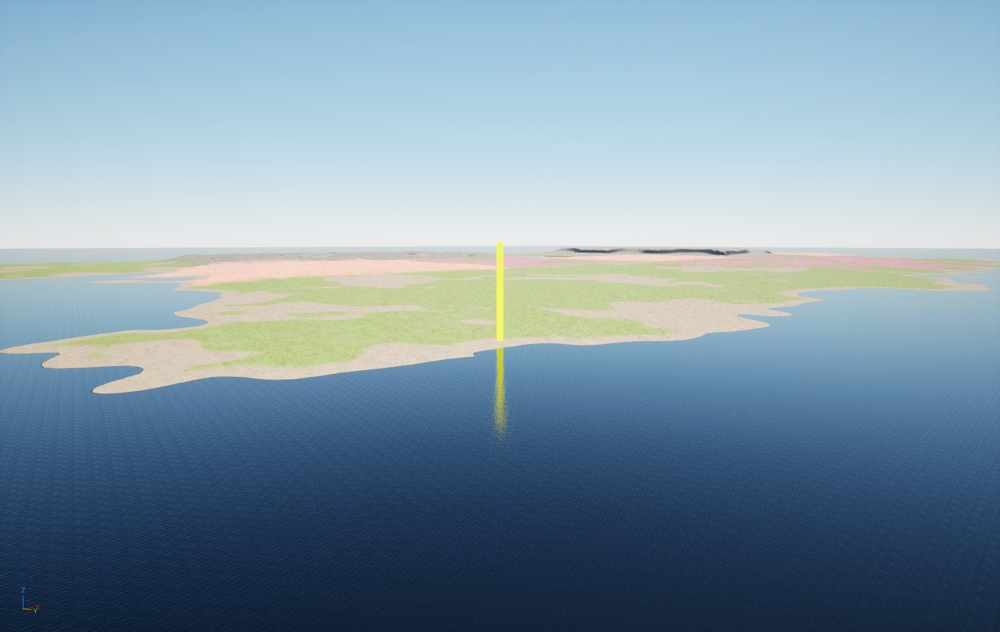

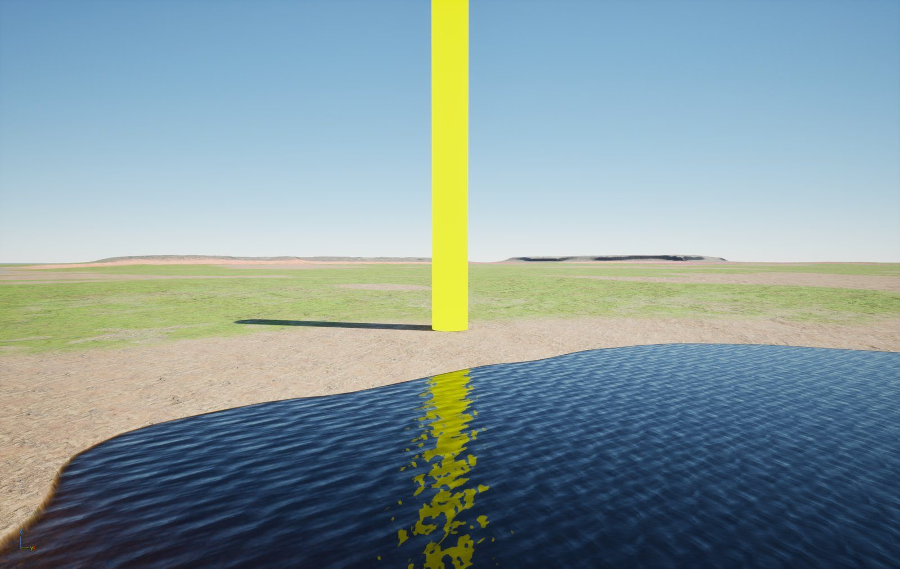

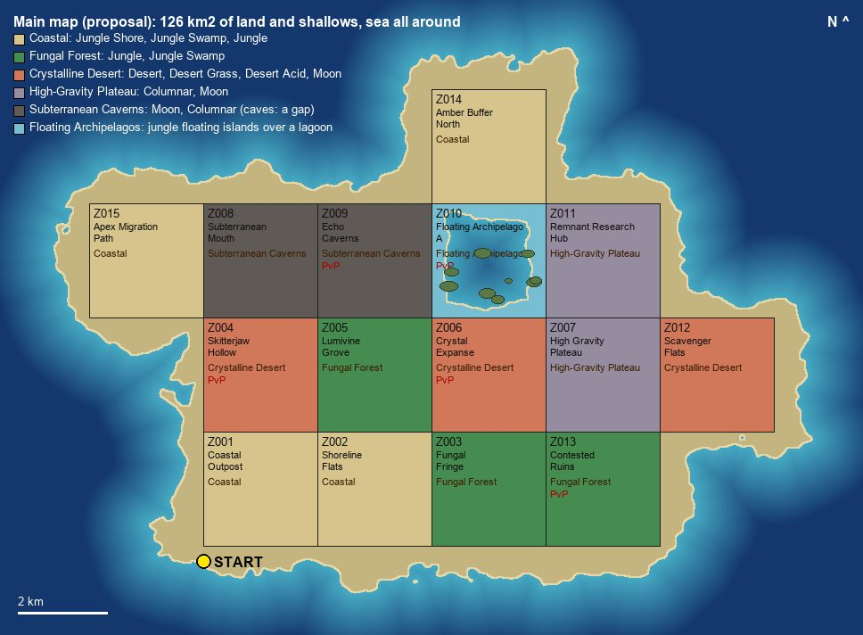
Where play starts
Open question On the beach at the south-west corner of the Coastal Outpost (Z001), the starter hub. From there you push east along Shoreline Flats into the Fungal Fringe, or north into Skitterjaw Hollow. The land of this corner will come from one real coast, scanned from the air (public lidar), shaped to fit. Four candidates, each built in the editor with the bundle's alien jungle (the plants and rocks are the same whichever coast is picked):

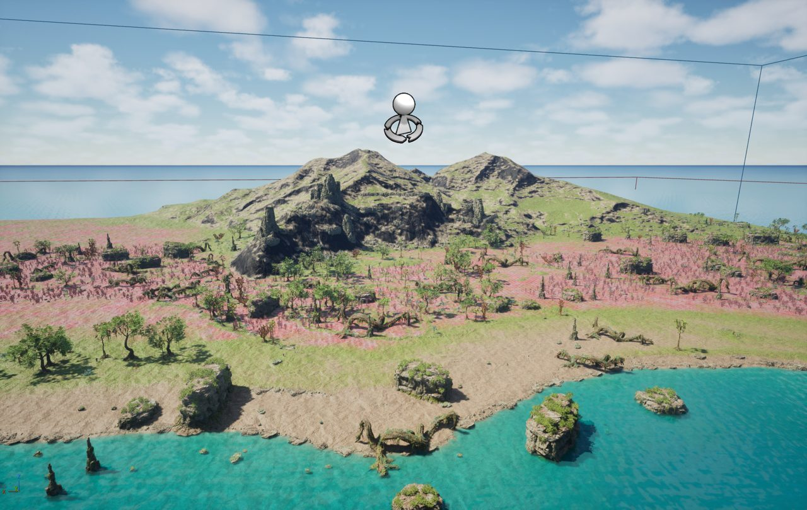

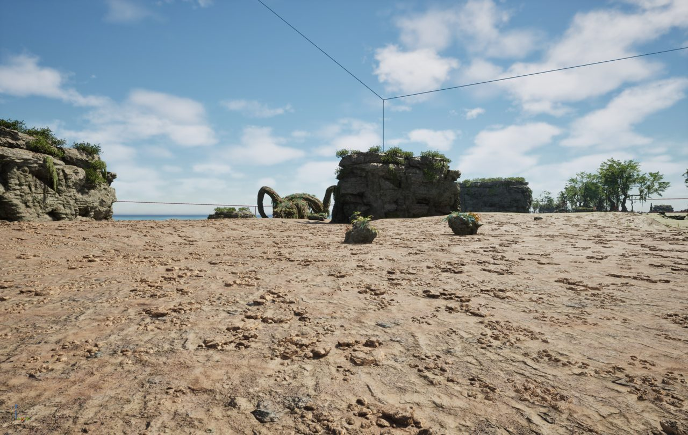

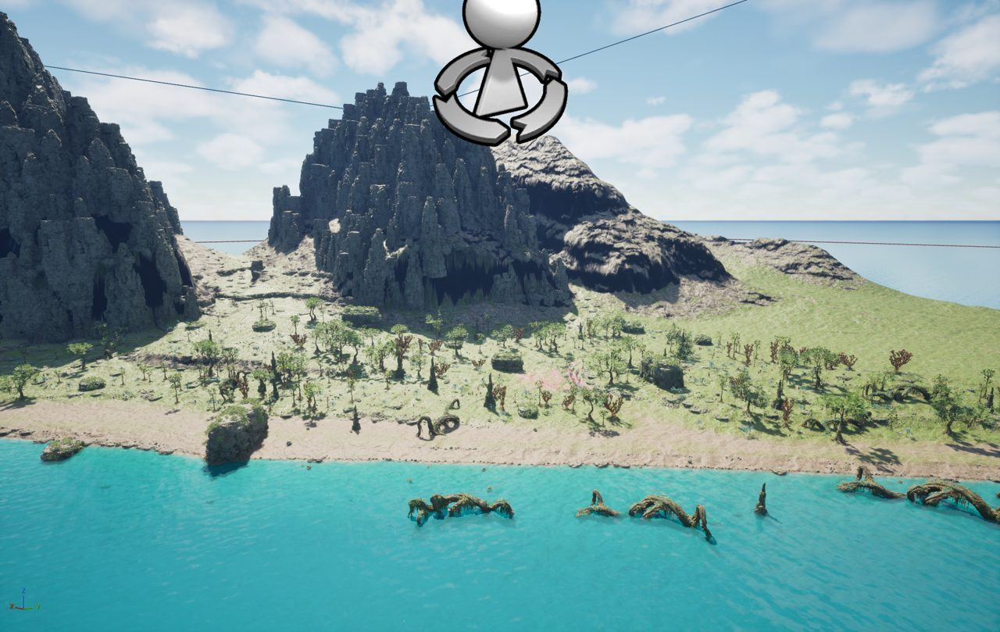

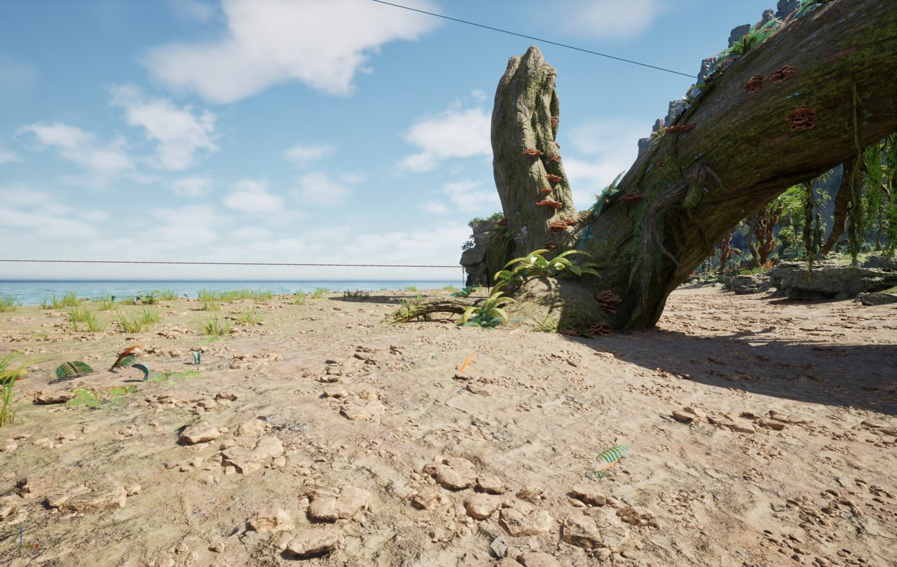

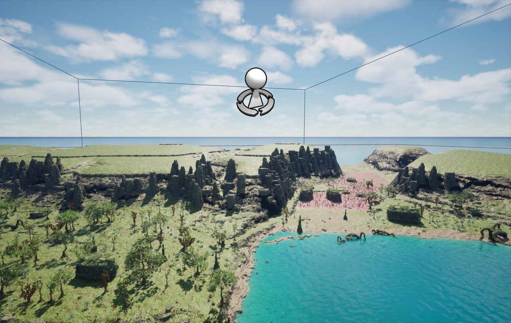

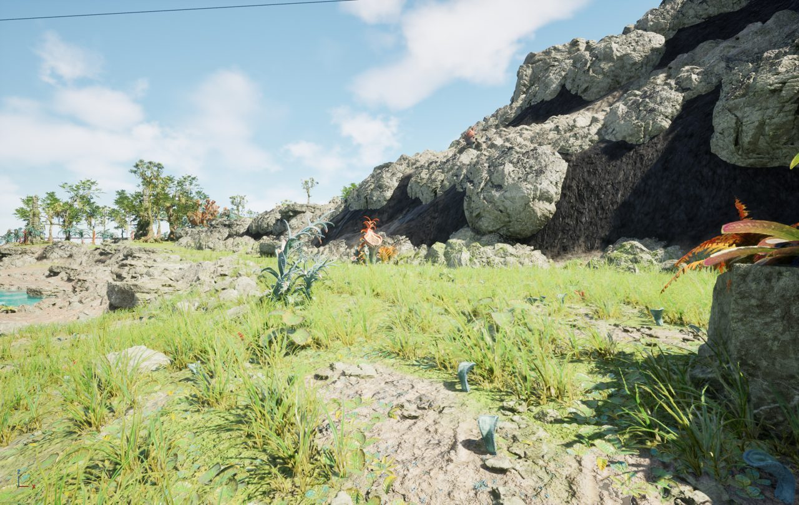

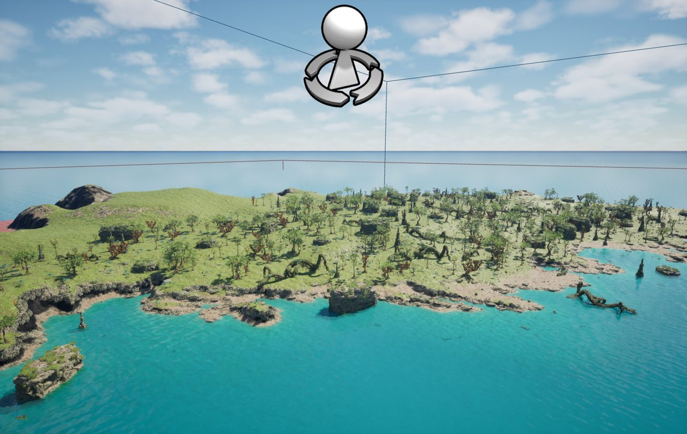

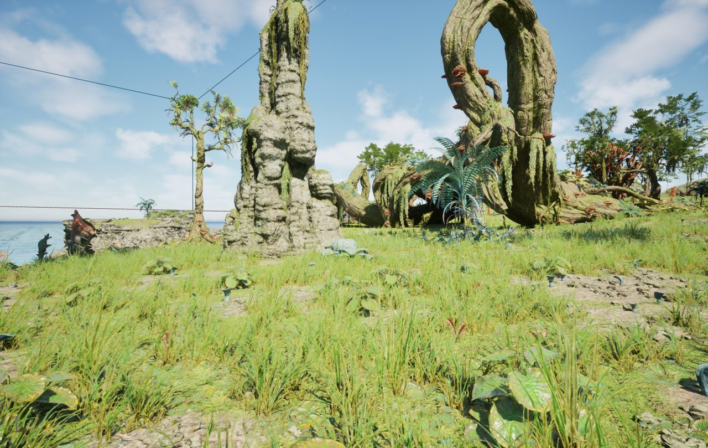
Or a made-up coast, or one whole 10 × 10 km lidar area as the main map's land with the biomes painted over it (OQ-06).
Six biomes
You start on the coast and push inland and upward, toward the floating islands of the endgame.
CoastalFungal ForestCrystalline DesertHigh-Gravity PlateauSubterranean CavernsFloating Archipelagos
| Biome | What it is like | Resources | Threats |
|---|---|---|---|
| Coastal (start) | Wreckage, shallow pools, small fauna | Organic, low-tier minerals | Skitter packs, tidal storms |
| Fungal Forest | Bioluminescent flora, spore clouds | Biotech cores, organic fibre | Spore bloom, Lumivine Colossus |
| Crystalline Desert | Crystal fields, gravity anomalies | Energy crystals, alloy veins | Sand raptors, grav raptors, Skitterjaws |
| High-Gravity Plateau | Heavy fauna, slow movement | Rare alloys | Heavy grazers, territorial titans |
| Subterranean Caverns | Oxygen limits, echo swarms | Alien cores, rare minerals | Echo Swarm, cave collapses |
| Floating Archipelagos (endgame) | Aerial traversal, PvP warzones | Endgame blueprints | Aerial predators, faction fortresses |
The world will be built from the Sci-Fi Complete Bundle's biome presets, put together the way its own example level is: the coast from its jungle shore, swamp and jungle; the Fungal Forest from the jungle; the desert from its desert, acid and moon sets; the plateau from its columnar rock. The caves cannot be ordinary terrain (it has no overhangs), and the floating islands will be their own streamed levels.
Zone map
Drawn to scale from the zone data, with y increasing upward (so Amber Buffer North is north of the archipelago). Each square is 2.56 km across; the numbers along the edges are kilometres from the world's centre.
- Safe hub
- Open PvE
- Flagged PvP
- Amber buffer
Zone types
| Type | Zones | Meaning |
|---|---|---|
| Safe hub | 2 | Vendors, mission boards and safe services; no combat between players. |
| Open PvE | 7 | Creatures and resources; players cannot attack each other. |
| Flagged PvP | 5 | Entering flags you for PvP; richer loot, full loot on death. |
| Amber buffer | 1 | A warning belt around a PvP zone; not flagged. |
Every zone
Level is the recommended level. Respawn is how often its resources and creatures come back.
| ID | Zone | Type | Level | Loot | PvP | Respawn | Notes |
|---|---|---|---|---|---|---|---|
Z001 | Coastal Outpost | Safe hub | 1 | Common | — | 10 min | Starter hub with vendors and mission board |
Z002 | Shoreline Flats | Open PvE | 1 | Common | — | 15 min | Low risk for early scavenging |
Z003 | Fungal Fringe | Open PvE | 5 | Uncommon | — | 20 min | Bioluminescent flora; spore hazards |
Z004 | Skitterjaw Hollow | Flagged PvP | 8 | Rare | Flagged 10 s consent · 60 s exit | 30 min | Small PvP hotspot near resource nodes |
Z005 | Lumivine Grove | Open PvE | 10 | Uncommon | — | 40 min | Contains Lumivine Colossus spawn points |
Z006 | Crystal Expanse | Flagged PvP | 18 | Advanced | Flagged 10 s consent · 60 s exit | 1 h | Gravity anomalies; high-tier crystals |
Z007 | High Gravity Plateau | Open PvE | 22 | Advanced | — | 70 min | Movement penalties; heavy fauna |
Z008 | Subterranean Mouth | Open PvE | 15 | Rare | — | 50 min | Dungeon entrance; oxygen limits |
Z009 | Echo Caverns | Flagged PvP | 20 | Advanced | Flagged 10 s consent · 60 s exit | 90 min | Echo Swarm events; dungeon modifiers |
Z010 | Floating Archipelago A | Flagged PvP | 30 | Alien | Flagged 10 s consent · 60 s exit | 2 h | Endgame PvP warzone; aerial traversal |
Z011 | Remnant Research Hub | Safe hub | 12 | Rare | — | — | Faction hub with tech vendors |
Z012 | Scavenger Flats | Open PvE | 6 | Common | — | 15 min | Player trading posts |
Z013 | Contested Ruins | Flagged PvP | 16 | Advanced | Flagged 10 s consent · 60 s exit | 80 min | Large ruin with timed high-value node spawns |
Z014 | Amber Buffer North | Amber buffer | 10 | Uncommon | — | 20 min | Buffer belt around Floating Archipelago |
Z015 | Apex Migration Path | Open PvE | 25 | Rare | — | 3 h | Periodic apex fauna migration; world event |
Still to settle
- Open question The direction asks for 6 hubs and 8 to 12 PvP hotspots, each inside an amber buffer belt. The map has 2 hubs, 5 flagged zones and 1 buffer; some hubs border PvP zones directly.
- Open question The island's layout and a biome per zone (the proposal above), and which coast the start is made from.
- Open question The terrain source: real coastal survey data where a landform fits, generated terrain elsewhere (OQ-06), and a test of the ocean (OQ-05).